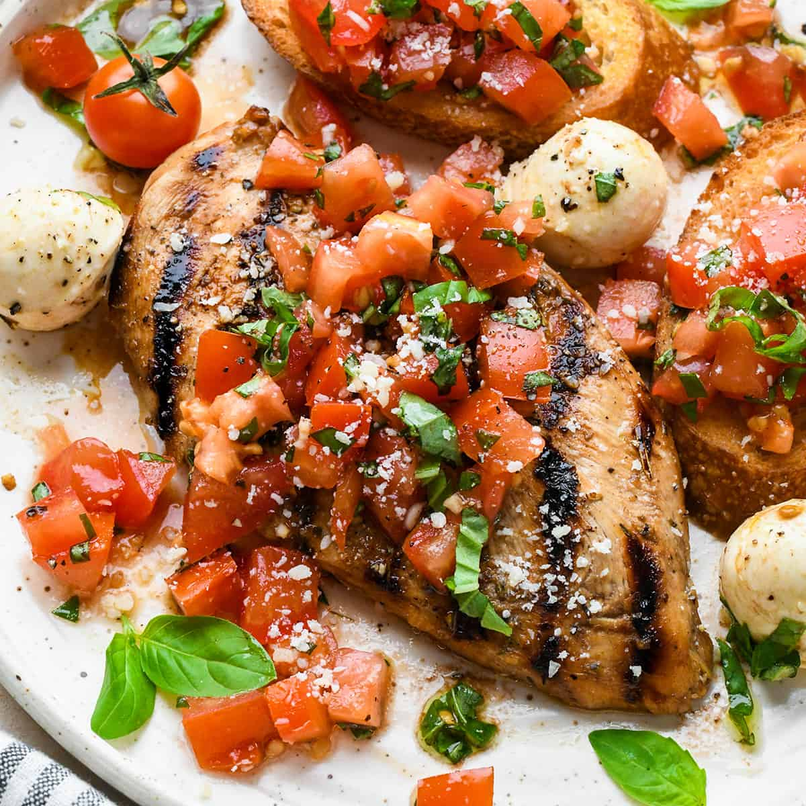
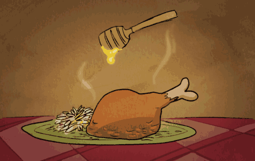

Severus Easy Cookbook
Current Recipes
Pizza Burgers
Rating
Total Time (40 minutes)
Serving(10-12)
Good Luck!


Ingredients
- 1lb of hamburger
- 6 ounces luncheon meat, grated
- 2 cups spaghetti sauce (use Ragu)
-
2 cups grated mozzarella cheese (about 1/2 pound) or
2 cups American cheese (about 1/2 pound)
- 1 tablespoon dried parsley
- 1 1/2teaspoons dried oregano
- 1/4 teaspoon garlic powder
- 1/4 teaspoon salt
- 1/8teaspoon pepper
- 12 plain hamburger buns
-
1 cup grated cheese, for topping burgers before
baking (I like using a combination of
American and Mozzarella cheese)
Directions
- Brown hamburger; drain fat.
- Add grated luncheon meat; saute 1-2 minutes.
-
Stir in rest of ingredients till combined and the cheese
has completely melted.
- Place all hamburger bun halves onto cookie sheets.
-
Add desired amount of sauce onto
each bun and sprinkle with the grated
American and mozzarella cheeses.
-
Bake in a 425 degree
oven for 10 minutes, or till heated through and cheese
is melted and bubbly.
- Serve immediately.
Chicken Bruschetta
Rating
Total Time (30 minutes)
Serving(4)
Good Luck!

Ingredients
- 1 (19 ounce) can stewed tomatoes, undrained
- 2 garlic cloves, minced
- 1 (120 g) package stove top chicken flavor stuffing mix
-
1 1/2 - 2 lbs boneless skinless chicken breasts
- 1 teaspoon dried basil
- 2 cups mozzarella cheese, grated
Directions
- Preheat oven to 400 degrees.
-
Mix undrained tomatoes with
stuffing mix and garlic and set aside.
-
Place cubed chicken in a greased 11x7 baking dish, sprinkle
with the basil and the cheese.
- Top with stuffing mixture and bake for 30 minutes.
Honey Pepper Chicken
Rating
Total Time (30 minutes)
Serving(4)
Good Luck!

Ingredients
- 500 gm chopped chicken
- 120 gm flour
- 120 gm corn flour
- 3 tablespoon crushed peppercorns
- 1 teaspoon ginger paste
- 120 gm chopped capsicum ( green pepper)
- 4 tablespoon refined oil
- 2 teaspoon salt
- 3 egg
- 150 gm honey
- 1 teaspoon garlic paste
- 1 handful chopped spring onions
- 1 pinch powdered black pepper
- 1 teaspoon sesame seeds
Directions
-
Combine the flour, corn flour, salt and
pepper powder in a bowl.
-
Take another bowl and break the eggs into the same.
Whisk them well. Add the chicken pieces in this egg
mixture and mix them well.
-
Heat oil in a pan over medium flame.
Fry the chicken pieces until golden brown and remove
and drain the excess oil.
-
Heat oil in a pan over medium-high flame.
Add sesame seeds and stir-fry for a minute or so.
Now, add half of the spring onions, ginger-garlic
paste and saute until onions turn golden.
Add the capsicum and saute for a minute.
Now add fried chicken pieces and mix well.
-
Add honey, crushed peppercorns, salt and stir well.
Garnish with the remaining spring onions and serve hot.